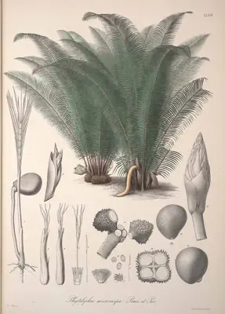

pranet · 出典付きの植物図鑑
ivory nut palm
Phytelephas macrocarpa Ruiz & Pav. · Arecaceae

Phytelephas macrocarpa is a single-stemmed, unarmed, reclining or erect palm from the extreme northern coastal regions of South America, growing to some 12 m tall. It has been introduced and cultivated in tropical regions all over the world. The trunk is about 30 cm across, with prominent leaf scars. The crown is made up of about 30 plume-like leaves or fronds, each about 8 m long, dead leaves being persistent. It is one of some 7 species of palm in the genus Phytelephas, all of which have been exploited for vegetable ivory or tagua from the seed or corozo nut. The closely related Ammandra decasperma from Colombia, and Aphandra natalia from Ecuador, are also sources of vegetable ivory, but of inferior quality and therefore not commercially significant. 'Phytelephas macrocarpa' translates to 'elephant plant' with 'large fruit', the endosperm of the nut having the texture of elephant ivory, and consisting of large, thick-walled cells of two long-chain polysaccharides, mannan A and B.
出典: Wikipedia 英語版「Phytelephas macrocarpa」 · CC BY-SA 4.0
異名: Elephantusia macrocarpa (Ruiz & Pav.) Willd., Elephantusia microcarpa (Ruiz & Pav.) Willd., Phytelephas brachelus O.F.Cook, Phytelephas brachinus O.F.Cook, Phytelephas brevipes O.F.Cook, Phytelephas cornutus O.F.Cook, Phytelephas karstenii O.F.Cook, Phytelephas longiflora O.F.Cook, Phytelephas microcarpa Ruiz & Pav., Phytelephas pittieri O.F.Cook, Phytelephas schottii H.Wendl., Phytelephas seemannii O.F.Cook, Yarina microcarpa (Ruiz & Pav.) O.F.Cook
同定や利用は自己責任でお願いします。この図鑑だけを根拠に野生の植物を食べないでください。
出典
- 学名: World Flora Online Plant List 2026-06 · CC0 1.0
- 名前: Wikipedia の記事名と Wikidata · CC0 1.0（Wikidata）。記事名は事実
- 説明: Wikipedia 英語版「Phytelephas macrocarpa」 · CC BY-SA 4.0
- 食用・毒性: World Checklist of Useful Plant Species (Diazgranados et al. 2020, RBG Kew) · CC BY 4.0
- 分布: World Checklist of Vascular Plants (WCVP), RBG Kew, version 2026-06-04 · CC BY 3.0
このページは pranet のデータから自動生成しています。コードは MIT、データは項目ごとのライセンス（説明）。